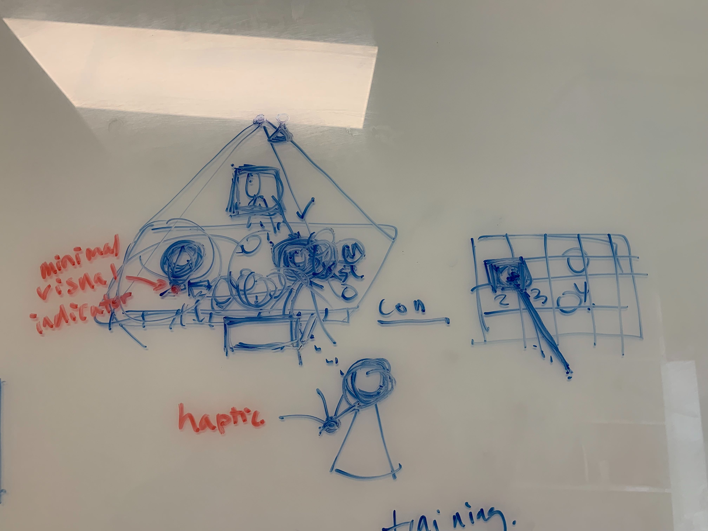

Week 3: Storyboarding

This week we reviewed the storyboard I developed over spring break. My design utilizes an augmented reality mobile application to perform object recognition and augment a virtual character signing the object’s name in ASL. The first three scenes illustrate one potential user scenario where both the parent and infant gaze at the toy car. The parent then brings forth the phone within both of their visual fields. Through the AR app, which projects the virtual character next to the toy car, the infant can receive linguistic input and associate what’s being signed with the object (and hopefully acquire vocabulary in sign language with repetitive use of the app). There are a couple of drawbacks to this design, which we discussed on Tuesday’s meeting. As opposed to being nonobtrusive, the design requires the parent to interrupt the infant’s focus of attention by always placing the phone between the infant and the object, which might work against what we’re trying to achieve. Second, the user scenario suggests that the parent will have to be sitting besides the infant. However, when we’re trying to track the gaze or focus of attention of someone usually we place ourselves in front of them instead of beside them. In this case, the phone will have to be uncomfortably placed between the parent and child, with the screen only facing the child. By addressing these drawbacks, we were able to modify the design.
The new design incorporates an overhead camera, which tracks the coordinate positions of the objects placed on the table and with the help of the eye tracking device communicate with the rest of the system which object is drawing the child’s attention. In this scenario, the child is sitting in the baby chair while the parent is directly across from them. After the system is notified of the infant’s object of interest the visual indicator is prompted, which is only visible to the parent. This helps to avoid distracting the infant. Here, we will be able to communicate with the parent the child’s visual focus and hopefully encourage the parent to be visually sensitive in their communicative behaviors. Another take on this design is utilizing a wearable haptic device that indicates the parent which object the child is looking at. Since where at the initial stage of drafting this design, we haven’t decided how we will introduce ASL instruction. For next week, I’ll look into the available eye tracking tools in the university’s digital media lab and see how we can further improve the current design.